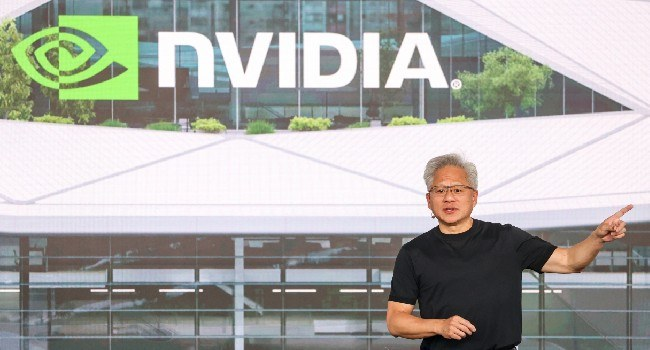

Nvidia: ‘I’d Be Honoured To Return,’ Jensen Huang On Possible Reinstatement

Former Nvidia chief executive Jensen Huang says he would return to the role if the company’s board decides his reinstatement is in the best interests of the company and its stakeholders. In a statement posted on X on Tuesday, he said employees, investors, business partners and customers had urged him to come back since he stepped down on November 12.
Huang acknowledged that his conduct had not met the standards expected of Nvidia’s leadership. He said he had made serious mistakes in his personal life, regretted the problems he had created for the board and was committed to cooperating with its independent investigation.
His departure followed reports of alleged extramarital relationships, including one involving an executive at Singapore-based cloud computing firm Megaspeed International. The company is under US criminal investigation over allegations that it helped Chinese companies obtain advanced Nvidia artificial intelligence chips in violation of US export controls. The allegations have also raised questions about the possible diversion of advanced US technology to China. Nvidia shares have faced pressure amid the controversy and wider uncertainty surrounding the company.
Huang’s potential return has drawn support from technology figures, including Elon Musk, and from US President Donald Trump, who voiced support on Monday. An online petition calling for Huang’s reinstatement has reportedly received more than 190,000 signatures. Huang, who described Nvidia as his life’s work and said building it with colleagues had been a privilege, is expected to appear before three US House committees on December 1 to answer questions about whether Chinese companies obtained advanced Nvidia chips despite Washington’s export restrictions.
Source: Channels TV